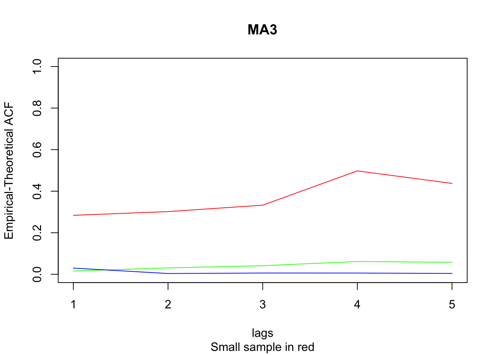
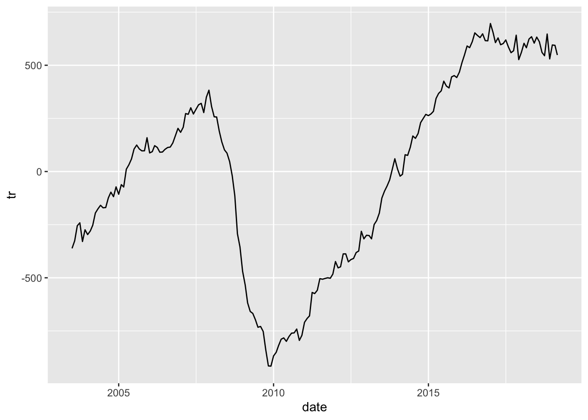
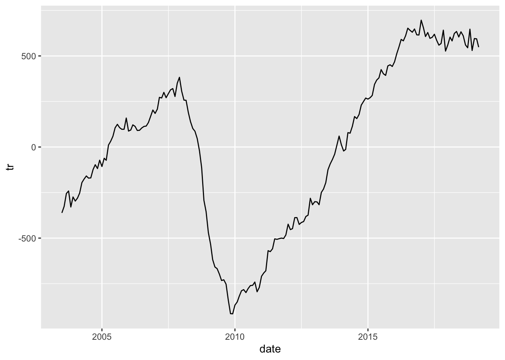

Chapter 5 Set 2
5.1 Exponential Smoothing
An alternate way to smooth a time series is with exponential smoothing. Like the moving average, this method averages over recent observations but differs in that it assigns relatively more weight to observations that are relatively closer. This idea can be expressed as,
\[\begin{align} \hat{y}_{t+1 | t} = \alpha y_t + (1-\alpha) \hat{y}_{t | t-1}, \end{align}\]
where \(\hat{y}_{t+1 | t}\) can be interpreted as the smoothed value of \(y_{t+1}\) given data up to time \(t\). So, for the first few smoothed values, we have:
\[\begin{align} \hat{y}_{1|0} &= l_0 \\ \hat{y}_{2|1} &= \alpha y_1 + (1-\alpha) l_0 \\ \hat{y}_{3|2} &= \alpha y_2 + (1-\alpha) \hat{y}_{2|1} \\ &= \alpha y_2 + (1-\alpha) \alpha y_1 + (1-\alpha)^2 l_0 \end{align}\]
Since we don’t have data prior to \(y_1\), we denote \(\hat{y}_{1 | 0} = l_0\). Therefore, this model depends on two parameters, \((l_0, \alpha)\). If we continue with the sequence above, each predicted value \(\hat{y_t}\) can be expressed,
\[\begin{align} \hat{y}_{t+1 | t} = (1-\alpha) ^ t l_0 + \sum_{j=0}^{t-1} \alpha (1-\alpha) ^ j y_{t-j}. \\ \end{align}\]
Let’s take a look at how this method depends on the parameters.

For any \(\alpha\) between 0 and 1, the weights attached to the observations decrease exponentially as we go back in time, hence the name “exponential smoothing”. If \(\alpha\) is small (i.e., close to 0), more weight is given to observations from the more distant past. If \(\alpha\) is large (i.e., close to 1), more weight is given to the more recent observations.
5.2 Decomposition
# us_employment data frame from the 'fpp3' package
us_employment$date = mdy ( str_c( month(us_employment$Month), "-1-", year(us_employment$Month)) )
retail = us_employment %>%
filter(Title == "Retail Trade", year(date) > 2002)
 

5.4 Lab 2
- Change the
esfunction in Exponential Smoothing to return the SSE, rather thanyt, the smoothed time series.Now, use theoptimfunction to find the values of \((\alpha, l_0)\) that minimize SSE. Plot the exponentially smoothed time series using the optimized \((\alpha, l_0)\).